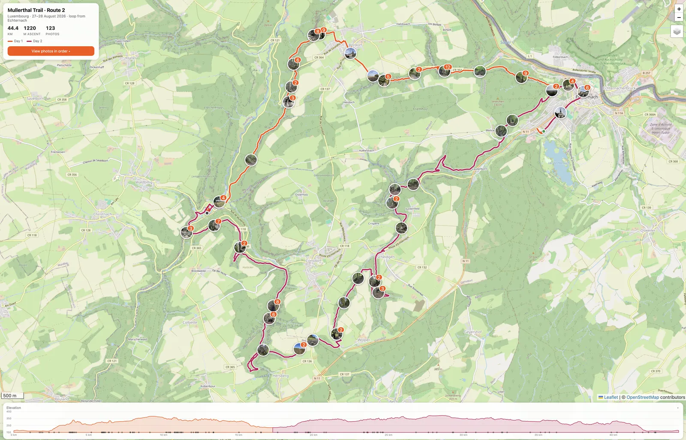
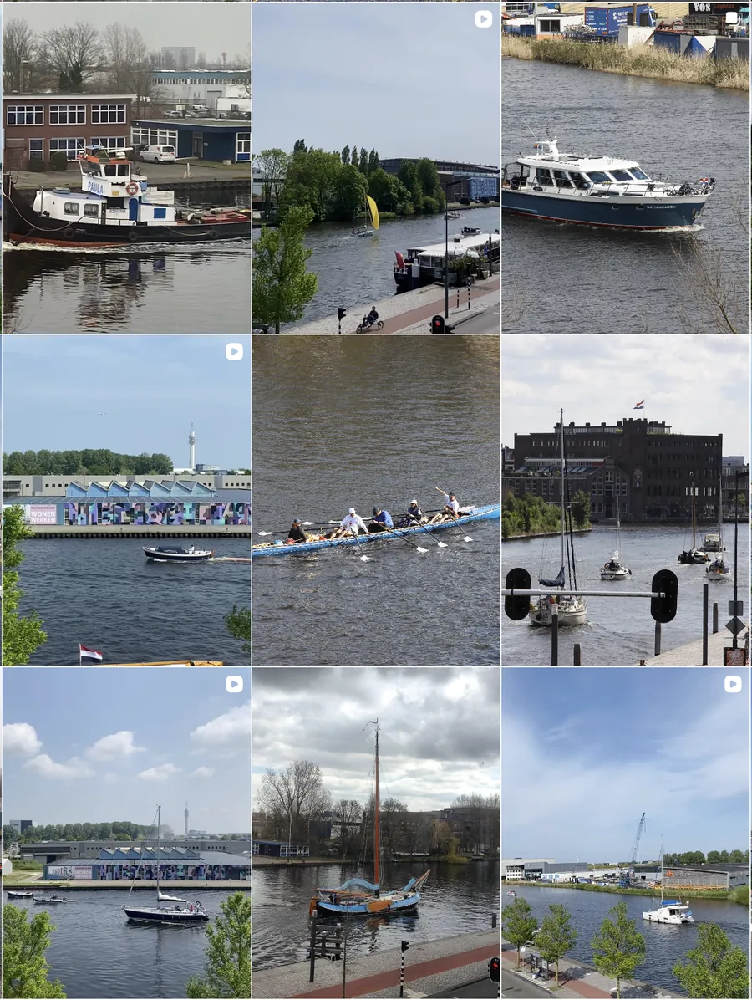
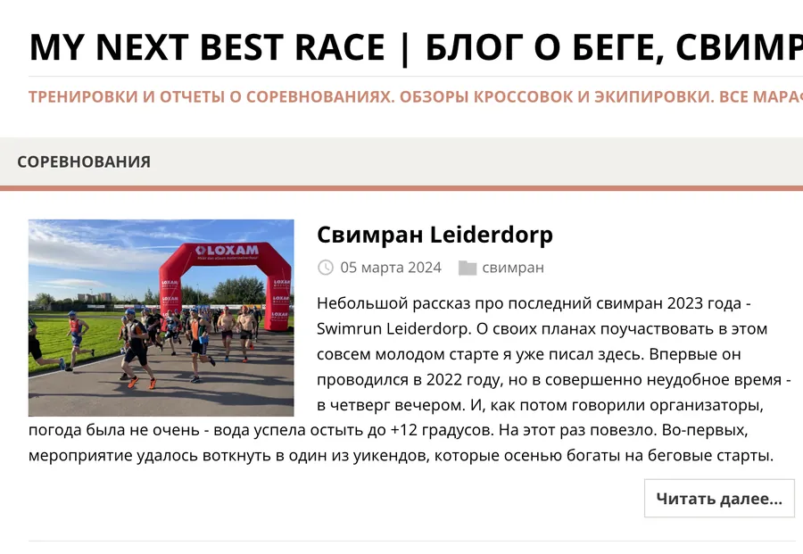
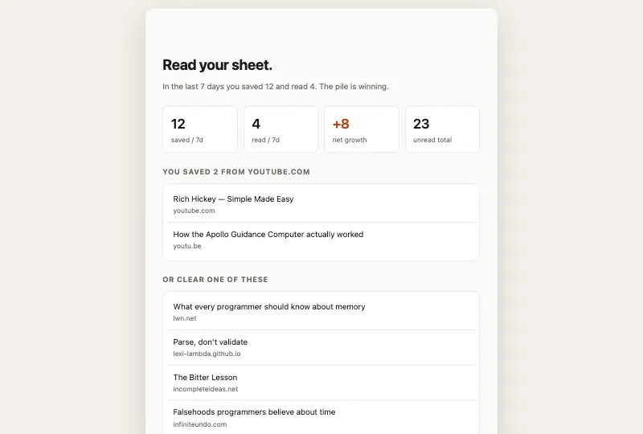
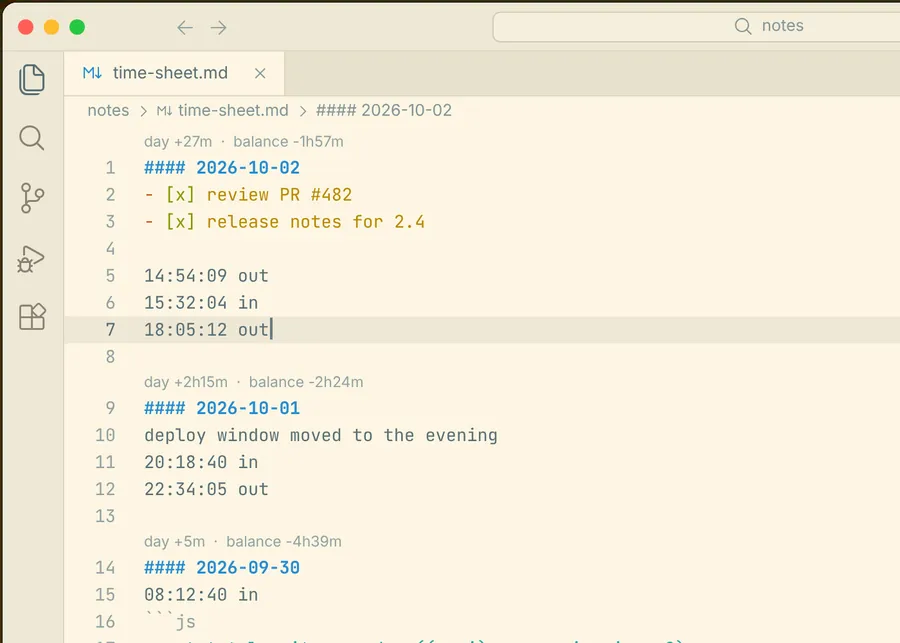

Things I make and keep going.

Interactive map of Route 2 in Luxembourg, a two-day loop from Echternach walked on 27–28 August 2026.

Yachts, boats, ships, kayaks and boathouses, seen from my window.

Блог о беге, свимране и триатлоне.

Soft-blocks distracting sites when your Reading List grows faster than you read it.

A flextime balance for people who keep a running Markdown note in VS Code.